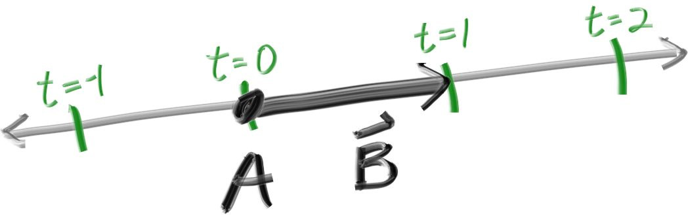

Rays, a Simple Camera, and Background
The ray Struct
The one thing that all ray tracers have is a ray struct and a computation of what color is seen along a ray. Let’s think of a ray as a function $$ \textbf{P}(\textit{t}) = A + \textit{t}b $$. Here \(\textbf{P}\) is a 3D position along a line in 3D. \(textbf{A}\) is the ray origin and $b$ is the ray direction. The ray parameter \(\textit{t}\) is a real number (f64 in the code). Plug in a different \(\textit{t}\) and \(\textbf{P}(\textit{t})\) moves the point along the ray. Add in negative \(\textit{t}\)values, and you can go anywhere on the 3D line. For positive \(\textit{t}\), you get only the parts in front of \(\textbf{A}\), and this is what is often called a half-line or ray.

The function \(\textbf{P}(\textit{t})\) in more verbose code form I call ray::at(t)
Create a new ray struct, no need to mention to add ray mod in main.rs, right?
#![allow(unused)] fn main() { use crate::vec3::*; pub struct Ray { orig: Point3, dir: Vec3, } impl Ray { pub fn from(origin: Point3, direction: Vec3) -> Ray { Ray { orig: origin, dir: direction, } } pub fn origin(&self) -> Point3 { self.orig } pub fn direction(&self) -> Vec3 { self.dir } pub fn at(&self, t: f64) -> Point3 { self.orig + t * self.dir } } }
Sending Rays Into the Scene
Now we are ready to turn the corner and make a ray tracer. At the core, the ray tracer sends rays through pixels and computes the color seen in the direction of those rays. The involved steps are:
- calculate the ray from the eye to the pixel
- determine which objects the ray intersects
- compute a color for that intersection point
When first developing a ray tracer, I always do a simple camera for getting the code up and running.
I also make a simple ray_color(ray) function that returns the color of the background (a simple gradient).
I’ve often gotten into trouble using square images for debugging because I transpose \(\textit{x}\) and \(\textit{y}\) too often, so I’ll use a non-square image. For now we'll use a 16:9 aspect ratio, since that's so common.
In addition to setting up the pixel dimensions for the rendered image, we also need to set up a virtual viewport through which to pass our scene rays. For the standard square pixel spacing, the viewport's aspect ratio should be the same as our rendered image. We'll just pick a viewport two units in height. We'll also set the distance between the projection plane and the projection point to be one unit. This is referred to as the “focal length”, not to be confused with “focus distance”, which we'll present later.
I’ll put the “eye” (or camera center if you think of a camera) at \((0,0,0)\). I will have the y-axis go up, and the x-axis to the right. In order to respect the convention of a right handed coordinate system, into the screen is the negative z-axis. I will traverse the screen from the upper left hand corner, and use two offset vectors along the screen sides to move the ray endpoint across the screen. Note that I do not make the ray direction a unit length vector because I think not doing that makes for simpler and slightly faster code.

Below in code, the ray r goes to approximately the pixel centers(I won't worry about exactness for now because we'll add anti-aliasing later):
use crate::color::*; use crate::ray::*; use crate::vec3::*; mod color; mod ray; mod vec3; fn main() { // Image const ASPECT_RATIO: f64 = 16f64 / 9f64; const IMAGE_WIDTH: i32 = 400; const IMAGE_HEIGHT: i32 = (IMAGE_WIDTH as f64 / ASPECT_RATIO) as i32; // Camera let viewport_height = 2f64; let viewport_width = ASPECT_RATIO * viewport_height; let focal_length = 1f64; let origin = Point3::from(0f64, 0f64, 0f64); let horizontal = Vec3::from(viewport_width, 0f64, 0f64); let vertical = Vec3::from(0f64, viewport_height, 0f64); let lower_left_corner = origin - horizontal / 2f64 - vertical / 2f64 - Vec3::from(0f64, 0f64, focal_length); // Render println!("P3\n{IMAGE_WIDTH} {IMAGE_HEIGHT}\n255"); for j in (0..IMAGE_HEIGHT).rev() { eprintln!("\rScanlines remaining: {j}"); for i in 0..IMAGE_WIDTH { let u = (i as f64) / (IMAGE_WIDTH as f64 - 1f64); let v = (j as f64) / (IMAGE_HEIGHT as f64 - 1f64); let r: Ray = Ray::from( origin, lower_left_corner + u * horizontal + v * vertical - origin, ); let pixel_color = ray_color(&r); write_color(std::io::stdout(), pixel_color).unwrap(); } } eprintln!("\nDone"); } fn ray_color(r: &Ray) -> Color { let unit_direction: Vec3 = r.direction().unit_vector(); let t = 0.5 * (unit_direction.y() + 1f64); (1f64 - t) * Color::from(1f64, 1f64, 1f64) + t * Color::from(0.5, 0.7, 1f64) }
The ray_color(ray) function linearly blends white and blue depending on the height of the \(\textit{y}\)
coordinate after scaling the ray direction to unit length (so \(-1.0 < \textit{y} < 1.0\)). Because
we're looking at the \(\textit{y}\) height after normalizing the vector, you'll notice a horizontal
gradient to the color in addition to the vertical gradient.
I then did a standard graphics trick of scaling that to \(0.0 <= \textit{t} <= 1.0\). When \(t = 1.0\) I want blue. When \(t = 0.0\) I want white. In between, I wanta blend. This forms a "linear blend", or "linear interpolation", or "lerp" for short, between two things. A lerp is always of the form:
$$ blendedValue = (1-\textit{t}) * startValue + \textit{t} * endValue $$
with \(\textit{t}\) going from zero to one. In our case this produce: